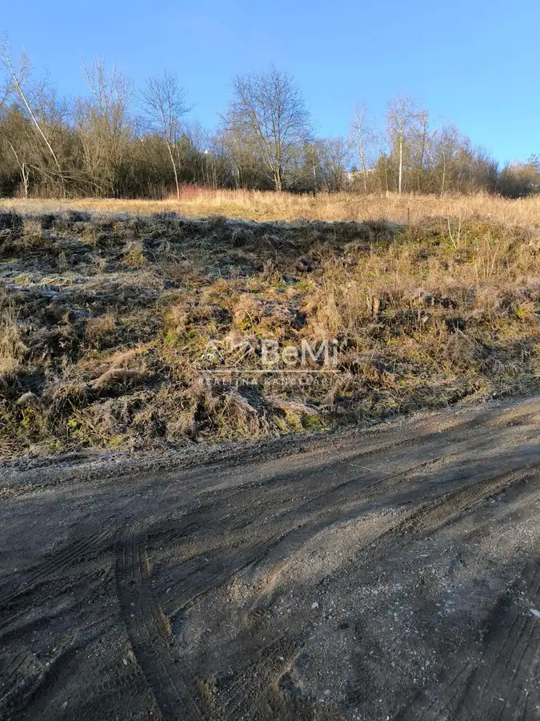
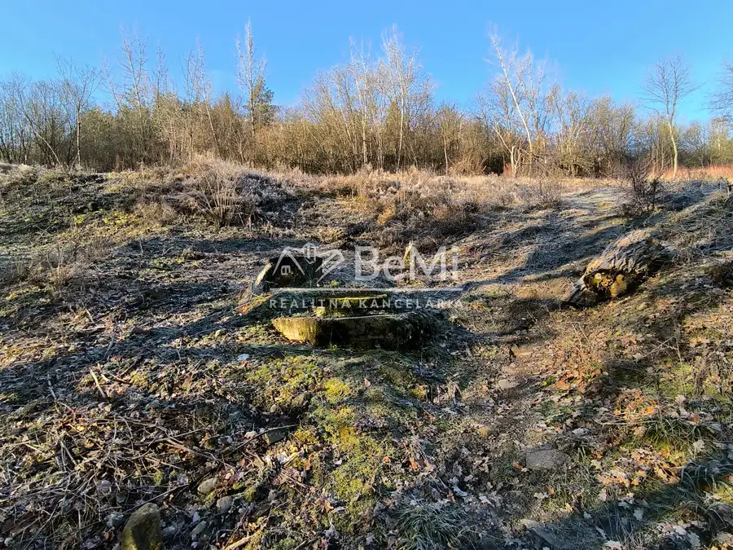
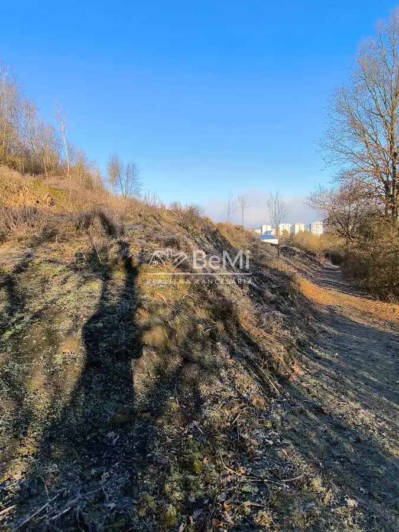
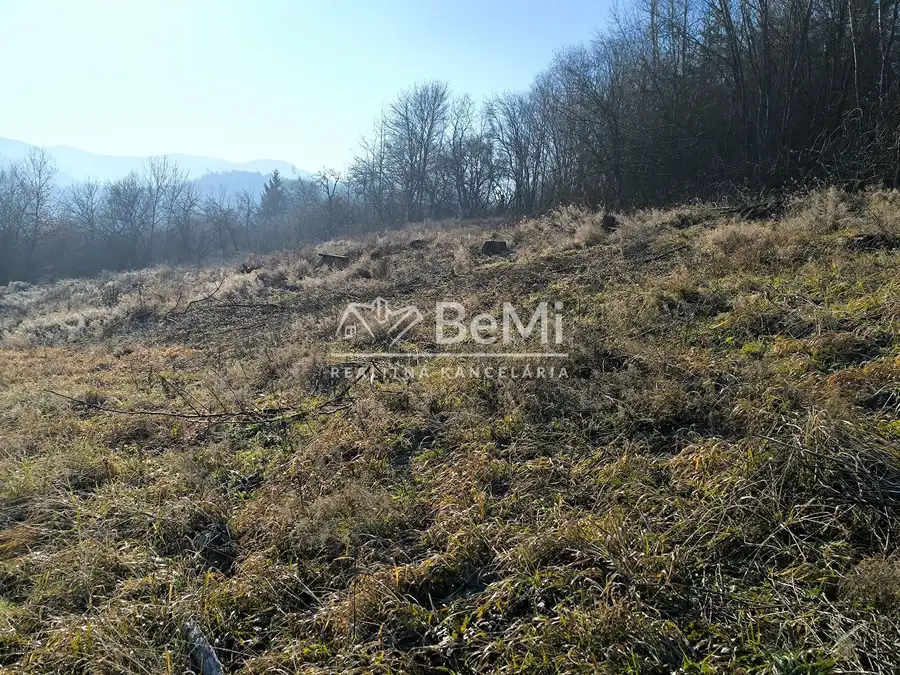
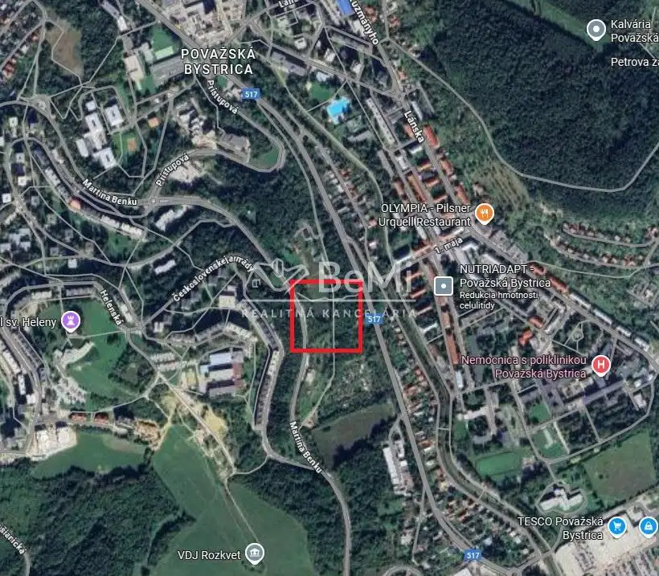

Predaj: Pozemok, Považská Bystrica, 719m2, (205-14-PEMO)
Považská Bystrica





- VlastníctvoOsobné
O nehnuteľnosti
(205-14-PEMO)Ponúkame na predaj slnečný pozemok priamo v meste Považská Bystrica. Jedná sa o svahovitý pozemok v tichom prostredí a s nádherným výhľadom na okolie. Nachádza sa v intraviláne mesta pod sídliskom Rozkvet a podľa územného plánu je určený na individuálnu výstavbu rodinných domov.K pozemku vedie mestská, asfaltová prístupová cesta, celoročne udržiavaná.V rámci inžinierskych sietí je možnosť napojenia sa na mestský vodovod, elektrinu, plyn a mestskú kanalizáciu.Celková plocha pozemku aj s podielmi: 719m2Celková cena :73.800,-€V cene je zahrnutý kompletný právny a finančný servisPozemok Vám radi ukážeme na obhliadke.Tel.kontakt +421 949 764 406, chrensc@realitybemi.sk
Parametre
- Druh
- Pozemok pre rodinné domy
- Dátum zverejnenia
- 30. 03. 2026
- Plocha pozemku
- 0 m²
- Typ
- Predaj
- Vlastníctvo
- Osobné